|
|
 |
A lot of this information is from common knowledge on Star Wars, some comes from hearsay and some of it is off the top of my head. If I made a blatant error with the information let me know so I can correct it. But it should be pretty accurate. The shot table at the bottom was compiled by Paulius Stepanas and is courtesy of the Dark Forces FAQList.
| Imperial Troops
Independents |
Mechanicals
Others |
Imperial Troops
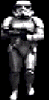Stormtrooper
"Only Imperial Stormtroopers are so precise."
Well that's what they say, but the truth is that these guys couldn't hit a star cruiser unless they were standing three feet away. With their innacurate rifles these guys aren't anything of a threat from long range, but in close quarters and in numbers they can be a nuisance. Two words: cannon fodder.
Suggested Method of Attack - Take them out with the Concussion Rifle in groups, or use the Repeater to pick them off one at a time. Getting to them before they close the distance or notice you is the key objective here.
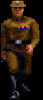Imperial Officer
The Imperial Officer is a pretty weak adversary, but in numbers can pose a threat. They sport a pistol that makes them more accurate than their Stormtrooper comrades, but slightly less dangerous. They aren't very fast and have no special means of attack.
Suggested Method of Attack - Like most Imperial Troops, keep them at a distance. Use the Bryar Pistol or Repeater Rifle to pick them off from long range before they can do much damage; TDs or Mortars are useful for larger groups at medium distances or if the group is above or below you.
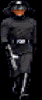Imperial Commando
The Commandos are drawn from the Officer corps, but their physical training makes them faster and more agressive, and the laser rifle they use gives them a longer range but less accuracy. These gray-uniformed enemies are the toughest in the human Imperial ranks.
Suggested Method of Attack - The same applies to the Commandos as for Officers and Stormtroopers: get them at long range or before they notice you're there. Surprise or an accurate long-range attack are your best advantages.
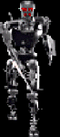Phase I Dark Trooper
The Phase I is the first stage of Dark Trooper construction and is essentially an endoskeleton. It attacks with a metal blade that your shields can do nothing against, and also has the ability to block energy weapons with a small shield on the left arm. Fast and deadly - listen for the tell-tale buzz to announce their activation.
Suggested Method of Attack - Keep moving! Don't let these guys get close enough to hit you. TDs are the best to use on the Phase Is if you have enough room to move around, but in close quarters a laser rifle can take them out fairly easily. Just keep you finger on the trigger and watch out for any ricochets from the shield.
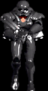Phase II Dark Trooper
The Phase II represents the second stage of Dark Trooper construction. They are armed with an assault cannon which fires plasma and missiles; combine that with their jet packs and high speed attacks and you get a very vicious foe. They like to fire off steady streams of plasma but have to stand still to do so; a missile is usually launched immediately upon noticing you, unless they're close enough that they'd damage themselves.
Suggested Method of Attack - Movement is even more essential here than with the Phase Is. But it's mroe important to move back and forth to avoid the plasma and be ready to run away fast to stay out of range of missile explosions. It's never a good idea to get your back to a wall when facing these guys. Missiles do well for long range, and plasma can take them out fairly quickly. The Repeater is probably the best weapon here; keep firing in their direction as they stand still to launch plasma and strafe back and forth quickly to avoid incoming fire. This works best in the medium to close range.
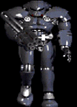Phase III Dark Trooper
The most deadly soldier the Empire has ever come up with, the Phase III is the final stage in Dark Trooper construction. Brain child of General Mohc, the Phase III has the same weapons as the Phase II plus some energy orbs that seek you out until destroyed. The Phase III appears slightly slower than the Phase II, but the extra armor and weaponry makes up for the loss in speed.
Suggested Method of Attack - You'll only face one Phase III in Dark Forces, but the add-on levels are another matter. For the one in Dark Forces you can lay mines around the column at the beginning. But once it gets in the open heavy firepower is your best friend. Start with the Assault Cannon launching missiles and plasma like crazy. Try to take out energy orbs when you can since the resulting explosions will damage the Phase III. Avoid the plasma in the same way as for a Phase II and just keep shooting. If you can find a concealed area with a low enough entry to prevent the DT from firing then you can pick it off at your leisure. Otherwise the battle comes down to who can score the most damage in the shortest time. Nothing fancy, just lay into him and keep moving.
Independents
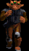Gran
The Gran has a long association with the underworld, particularly in the service of the Hutts. The most distinguishing feature is the three eye stalks on the head. The primary weapon of a Gran is the Thermal Detonator and over long distances this can be devastating. But in close range they'll switch to fists to avoid damaging themselves in a TD explosion.
Suggested Method of Attack - If the ceiling's low enough or you can duck through a door then a Gran will likely take itself out with TDs. But in large open areas you need to take them down before they can throw a TD. They have quite an arm, but it does have a limit; stay outside of it and pick them off with the Repeater or Bryar Pistol if you can. The Concussion Rifle is also good for med-long range attack. For medium range - if the Gran throws a TD, run TOWARDS THEM. This gives you a better chance of ducking under the detonator and avoiding the explosion, and also closes the distance so they can't throw any more. Once you get in close your shields are worthless, so either hit them with a fast weapon(Stormtrooper Rifle or Repeater) or switch to fists. Fists are probably the best if you can get your punches in quickly and keep away when they swing.
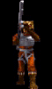Trandoshan
These reptilian humanoids, of which Bossk is the most famous, are skilled with a Concussion Rifle and are known to do the odd job for Darth Vader as a bounty hunter. They're also known to work for Hutts in the underworld - provided the price is right. Deadly at long range with the rifle, they move fairly slowly in order to keep their distance from you and maximize the rifle's effectiveness.
Suggested Method of Attack - Get in close. The trandoshan will cease fire in order to avoid hurting itself when you get too close and it has no other attack. Fists will finish it then, or a few quick blasts with any of several weapons. If you're unlucky enough to be in long range. Try to stay behind cover to avoid the concussion blasts and fire quickly with your own Concussion Rifle while dodging blasts and trying to close the distance. Be sure to swtich to a weapon that won't do damage to yourself when you get within a shorter range.
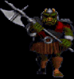Gamorrean Guard
These pig-like guards are slow to move and attack, but when they swing their battle-axes they can be very deadly. Shields won't do you any good if they get close enough to attack, and they can take quite a beating before they finally keel over.
Sugggested Method of Attack - Don't get too close to these guys. Pick them off from long range if you have the time and ammo. Otherwise get in close and use the fists. Run in and get in a quick punch and then duck out of range of the axe. Repeat. This tactic should not be used in areas without some room to move or when there are several other enemies around.
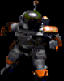Boba Fett
Has anyone in the galaxy not heard of this legendary bounty hunter? Quite easily the most famous mercenary of his time, Boba Fett lives up to the reputation given him. Fast moving and firing, he can kill before you even know he's there. His jet pack gives him the upper hand(literally) and his rockets are devastating. If this guy have been assigned to hunt you down, the best advice is to run.
Suggested Method of Attack - If there's any way to avoid this guy, then do it. But if you're forced into a confrontation listen for his tell-tale chuckle that signals he's found you. And then start moving. Boba Fett is easily the most agressive of the enemies you'll meet, and you want him out in the open. He's faster than you so your best shot is to get a bead on him and keep pulling the trigger. If you hit him he'll temporarily lose his jet power and fall a short ways before climbing again, and once you've inflicted enough damage he might just have to stop and get his bearings by hovering for a while. That provides an easy target, so lay into him with any heavy artillery you have. For this guy, fast firing weapons are the best and if there's a weapon supercharge around you'll have an added bonus.
Mechanicals
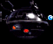Interrogation Droid
These spherical orbs are the Empire's primary tool in extracting information or confessions from helpless prisoners. They hover above the ground and have pretty good vertical motion, but their horizontal speed is fairly slow. They come equipped with a stun device and a power blast.
Suggested Method of Attack - Don't get too close to these guys. The stun device will punch right through your shields and it's difficult to get a bead on them in close quarters. The droids are horrible shots with the power blast so use TDs or the Repeater to take them out from long distances.
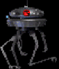Probe Droid
These droids are used by the Empire and various other factions as an early detection and warning device. They fly above the ground and fire with a laser that has roughly the same power as a standard Stormtrooper Rifle. The speed of these droids is nothing to worry about but you should be carfeul of the secondary explosion when they are destroyed.
Suggested Method of Attack - Explosives are fairly tough to aim correctly for these guys, so an accurate energy weapon is best. Speed in taking them out is a consideration because while they won't win any races the probe droids are still pretty accurate with their laser over long range. The Fusion Cutter is usually a reliable weapon for dealing with probe droids.
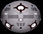Remote
Remotes are small spherical droids that move with quick jerks. They don't pack much of a punch with their laser, but they are very good at avoiding incoming fire. Mostly they're just a large annoyance.
Suggested Method of Attack - You'll need an accurate energy weapon to take these guys out, and you'll want to get them before they get too close. Once they're within range they don't really constitute a threat to your life, but they sure are hard to hit. If you have somewhere to hide behind drop a Detonator and then back up and let the remote get blown to pieces.
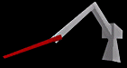QS100 Welding Arm
The welding arms are designed to activate whenever an object comes within a certain radius. Usually these things are placed along assembly lines. They don't have any incredible intelligence but are dangerous just the same.
Suggested Method of Attack - The welding arms can take quite a bit of damage and do quite a bit as well. Shields aren't going to help you out so just be sure to stay out of their range. TDs or Mortars are the fastest way to take them out, but a series of blasters shots will do in a pinch.
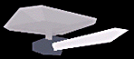Gun Turret
Turrets are primarily used by the Empire in areas where they don't want unauthorized people getting in. Fixed to a wall, ceiling or floor they have limited artificial intelligence, detecting you only when you come within visual range, and only firing when you're within a certain distance. Their laser packs a major blast though, and they have a full circle of horizontal motion and a reasonable amount of vertical angling, so proceed with caution. When they take a certain amount of damage there is a short circuit in the firing and motion mechanisms and the turret spins wildly, firing in all directions until dealt the finishing shot.
Suggested Method of Attack - The Assault Cannon is best for dealing with the turrets; a few quick blasts and they're history and usually you can take them out before they have a chance to get off a shot. But if you don't have the heavy firepower then an accurate weapon is your best hope. Stay out of their range if possible, or else duck in and out of cover while getting off a few shots at a time.
Power Generating Unit(PGU)
Power Generating Units are exactly what the name implies - a medium sized power generator. You can usually find them around industrial areas or hangars and are commonly used as power supply for small camps; X-wings and Y-wings carry one in case of emergency landing. They have no artificial intelligence and therefore won't attack you, but beware of them in the middle of a fight becuase a stray laser or misplaced detonator can have a disastrous(or beneficial) effect. The generators are very unstable and will explode with only a slight amount of provocation.
Suggested Method of Attack - If you're moving into an area you suspect holds enemy troops, try to take out the PGUs before you enter the area if you can. Rolling a TD into the room can not only remove the possibility of your being damaged by the PGU in a firefight, but the resulting explosion may also take care of the troops in the room. Beware around these things because while you may be careful your enemies might not care so much.
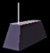Mousebot
Mousebots are primarily used in large facilities as guides for visitors, or in military installations for troop coordination. They have very low intelligence, mostly just moving around and beeping, and pose no threat at all to you. Some mousebots have been known to exhibit some flaws in their programming, hiding themselves away in ventilation shafts or other like areas.
Suggested Method of Attack - Don't worry about mousebots for the most part. They can't hurt you so when you're in a hurry they aren't worth your time. But if you are running low on power they'll drop a battery when destroyed. Look down and fire to hit them, or crouch to come down to their level. One shot at close range from any weapon will do them in.
Others

Dianoga
Long thought to be only the imaginings of maintenance workers, these creatures have only recently been confirmed as real. The beasts spend most of their time below the surface of water/sewer sludge, only surfacing to scout the area briefly or to attack. Dianogas have been known to sieze their victims with tentacles and drag them underneath the water to drown, but it is most common that they attack with their massive jaws.
Suggested Method of Attack - You won't see a Dianoga at first, but you can hear a guttural growl when they notice your prescence. Look for the eye-stalk to poke up above the sludge and try to blast it as fast as you can. Explosives are only good if the creatures are near a wall because TDs and mortars will only splash in the water. Your best hope is to find a ledge above the water/sludge and pick off as many as you can before jumping in. When in doubt, run; these things aren't too fast.
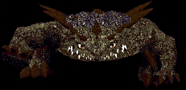Kell Dragon
Like its larger relative the Krayt Dragon, Kells are native to the wastelands of Tatooine. It's rare that anyone will encounter one in the wastes and live to tell about it, but Kells are often captured by well-armed parties and sold as pets to the more frivolent and sadistic underlord bosses who frequently use them to dispose of unwelcome guests or pit them against gladiators as entertainment. They are known to have tremendous jumping abilities and their jaw strength is very fearsome.
Suggested Method of Attack - It's always best to stay far, far away from a Kell and pick it off quickly with missles or plasma. If you don't get close then they can't bite. But if forced to engage in close quarters then just try to dispose of it as quickly as possible. If forced to fight a Kell Dragon without weapons then try to move in and out of range while getting quick shots in with fists. If there's some place that you can hide in while getting in a few punches at random that will help tremendously. Working with fists is deadly and time consuming but it can be done.
Shot Table
The following table was compiled by Paulius Stepanas and displays the minimum number of shots required to kill an enemy. One thing to note: these numbers are valid only for point-blank direct shots. Lasers lose power over distance and explosions have an 'area' effect in which the damage done to an object is dependent upon the object's proximity to the explosion, so for varying distances these numbers will change. For the most part they are accurate. According to Paulius some trouble was had in compiling the numbers for some weapons on the Dark Troopers and Boba Fett; therefore numbers with a '~' represent approximations. The data for Kyle Katarn(bottom row) is assuming that the shot is bounced off a wall or the explosion is nearby.

| Enemy | Weapon | ||||||||||
| Fists | Pistol | S. Rifle | TDs | Repeater | F. Cutter | IM Mines | Mortars | C. Rifle | Plasma | Missile | |
| Stormtrooper | 1 | 2 | 2 | 1 | 2 | 2 | 1 | 1 | 1 | 1 | 1 |
| Officer | 1 | 1 | 1 | 1 | 1 | 1 | 1 | 1 | 1 | 1 | 1 |
| Commando | 1 | 3 | 3 | 1 | 3 | 2 | 1 | 1 | 1 | 1 | 1 |
| Phase 1 DT | ~57 | ~65 | ~42 | 8 | ~27 | ~25 | 3 | 5 | 6 | ~11 | 4 |
| Phase 2 DT | ~37 | ~42 | 8 | ~37 | 18 | 4 | 12 | 10 | 12 | 8 | |
| Phase 3 DT | 100 | 78 | 90 | 22 | 79 | 53 | 12 | 25 | 25 | 25 | 18 |
| Gran | 2 | 4 | 4 | 1 | 4 | 3 | 1 | 1 | 2 | 2 | 1 |
| Trandoshan | 3 | 5 | 5 | 2 | 5 | 4 | 1 | 2 | 2 | 2 | 1 |
| Gamorrean | 5 | 9 | 9 | 3 | 9 | 7 | 2 | 3 | 3 | 2 | 2 |
| Boba Fett | ~25 | 38 | 5 | 34 | 17 | 4 | 9 | 7 | 7 | 4 | |
| Interrogator | 3 | 5 | 5 | 1 | 5 | 4 | 1 | 2 | 2 | 2 | 1 |
| Probe Droid | 3 | 5 | 5 | 1 | 5 | 4 | 1 | 2 | 2 | 2 | 1 |
| Remote | 1 | 1 | 1 | 1 | 1 | 1 | 1 | 1 | 1 | 1 | 1 |
| Welding Arm | 8 | 13 | 13 | 5 | 13 | 9 | 2 | 4 | 5 | 5 | 3 |
| Laser Turret | 4 | 6 | 6 | 2 | 6 | 5 | 1 | 2 | 2 | 2 | 1 |
| P.G.U. | 1 | 2 | 2 | 1 | 2 | 1 | 1 | 1 | 1 | 1 | 1 |
| MouseBot | 1 | 1 | 1 | 1 | 1 | 1 | 1 | 1 | 1 | 1 | 1 |
| Dianoga | 2 | 4 | 4 | 1 | 4 | 3 | 1 | 1 | 2 | 2 | 1 |
| Kell Dragon | 14 | 20 | 20 | 8 | 18 | 14 | 3 | 7 | 6 | 6 | 5 |
| Kyle Katarn | - | 10 | 10 | 22 | 10 | 15 | 90 | 42 | 30 | 30 | 59 |
 |
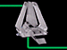 | |||||